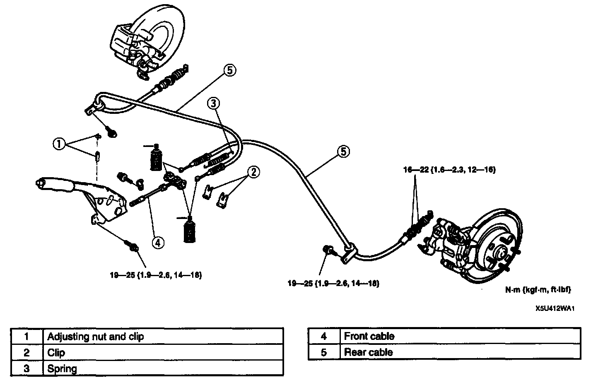

Parking Brake Cable: Service and Repair
PARKING BRAKE CABLE REMOVAL/INSTALLATION1. Remove the exhaust pipe heat insulator.

2. Remove in the order indicated in the table.
3. Install in the reverse order of removal.
4. After installation:
1. Adjust the parking brake lever stroke.
2. Depress the brake pedal a few times.
3. Verify that the rear brakes do not drag while the wheels are rotated by hand.